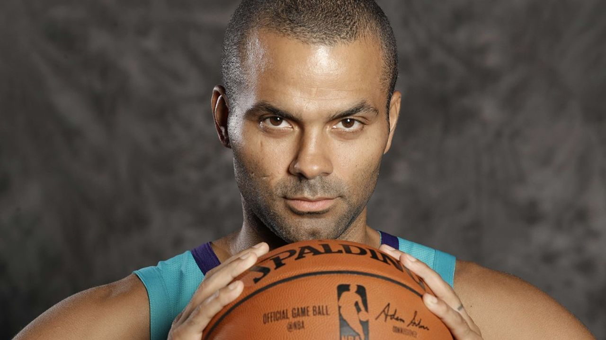

Tony PARKER
Meilleur joueur du Basket

Tony Parker et un remarquable Basketteur
Les années importantes de Tony Parker:
- 2001 - Le 30 octobre 2001 où il inscrit 9 points, 3 rebonds, 3 passes décisives en 21 minutes de temps de jeu. Il devait effectuer sa première saison en tant que remplaçant derrière Antonio Daniels, mais s'impose très vite et intègre le 5 majeur dès le cinquième match de la saison face au Magic d'Orlando,
- 2006 - En 2006, les entraîneurs de la NBA le choisissent dans l'équipe de la conférence Ouest pour le All-Star Game
- 2007 - 2011 - En 2007, il participe à nouveau au All-Star Game grâce au choix des entraîneurs et surtout il remporte un troisième titre en NBA aux dépens des Cavaliers de Cleveland battus 4-0 en finale.
- 2019 - À l'âge de 37 ans, Tony Parker annonce sa décision de prendre sa retraite sportive le 10 juin 2019, à l'issue d'une ultime saison NBA disputée dans les rangs des Hornets de Charlotte